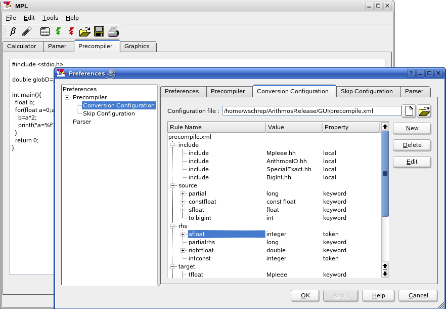

MPL
^ TOP
Multi Precision Lab
This is an integrated environment under development which will also contain the precompiler and GUI to easily generate conversion configuration files.Here is a screenshot:

For now though, one can easily write the configuration files manually. Take a look at Example 10.